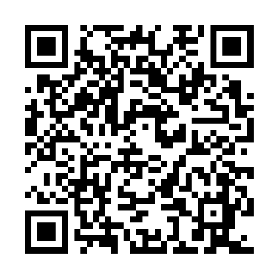

Phone app (fastest)
Works on Android & iPhone. Open, then Add to Home Screen for an app icon.
Open mobile appONE LINK · PHONE + DESKTOP
Scan a QR or tap a button. Android APK and desktop installers host on GitHub + talktoai.org. iPhone uses Home Screen install (PWA).
Works on Android & iPhone. Open, then Add to Home Screen for an app icon.
Open mobile appCryptographically signed for installation, but not distributed or reviewed by Google Play. Allow “unknown apps” for your browser once.
Download latest APK Versioned APK 0.4.1
ZERO ONE Desktop 7.9.0 — responsive Gemma E2B local Assistant plus a separate Ministral 8B full OpenZero runtime, resource profiles, visible loaded-model controls, always-visible version, review-first updates, persistent workspace tabs, ZMail actions and explicit ZSEC scans.
Download EXESHA256 839555359A06F5E3E10B9199E801DCB188D492273CF3F3FB8884F24D3C40DB6A
DMG, AppImage, DEB and the Play submission kit are linked from the full downloads page.
Desktop packages Play kitWindows (after winget PR merges): winget install TalkToAI.ZeroOne
Scoop: a manifest is staged in the desktop source repository; use the verified release installers until a public bucket is available.
Obtainium / APK updaters: point at the GitHub Mobile release or the APK URL above.
Chrome / Brave: Install OpenZero Tab Pilot, keep OpenZero running locally, and choose its one-click local connection.
Desktop 7.9.0 uses OpenZero Gemma4 E2B Agentic for local Assistant chat while the separate Ministral 8B Runtime Agent remains full OpenZero’s default. Model weights download separately; local chat cannot execute tools by itself. Live status JSON · Mobile checksums · Desktop checksums